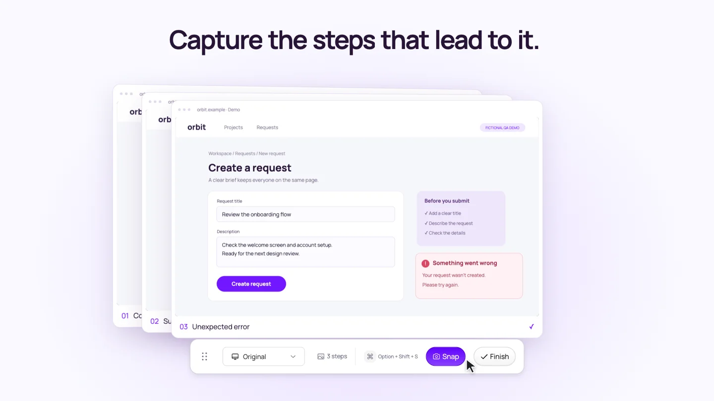

You find a bug, take a screenshot, and add it to the ticket.
The first reply: “What did you click before this?”
So you go back, repeat the steps, and take a few more screenshots. Now you’re explaining which image comes first and whether the form was already filled in.
A useful UI bug report gives someone enough context to repeat the problem. Capture the starting state, describe the actions, show the result, and explain what you expected instead. Screenshots support that explanation; they don’t replace the steps.
Here’s a practical way to put the report together.
Start with the condition that makes the bug happen
Before capturing anything, work out where your reproduction starts.
“Open the app” might leave out the important part. Perhaps the user must be signed in as a workspace member, have an empty project, or arrive from a particular page.
Record the conditions you actually tested:
- The page or route where you started.
- The user role and relevant account state.
- The browser version, operating system and viewport size.
- The app build or test environment, if available.
- Any setup needed, such as a previously saved draft.
If the bug happened once and you haven’t reproduced it again, say so. “Observed once; not yet reproduced” is more useful than presenting a one-off result as something that always happens.
Capture the states that explain the failure
You don’t need a screenshot of every click. Save the states that help someone understand the sequence.
For a form-submission bug, that could be:
| Capture | What it establishes |
|---|---|
| Completed form | The values entered before submission |
| Submitting state, if observable | The interface acknowledged the action |
| Error state | The exact message and what remained on screen |
The submitting state may disappear too quickly to capture manually. Don’t recreate it and present it as evidence. Use a short recording if that transition matters.
Keep enough surrounding UI to identify the page. A tightly cropped error message may be legible, but it can hide which form or action produced it.

Write the actions between the screenshots
Screenshots can show a completed form and an error. They may not show whether someone clicked the button, pressed Enter, or submitted twice.
Write that part down explicitly. For the fictional example above:
- Open the new-request form as a workspace member.
- Enter “Review the onboarding flow” in the title field.
- Enter “Check the welcome screen and account setup” in the description.
- Click Create request once.
- Observe the error message.
Use the labels people can see in the interface. “Click Create request” is easier to follow than “click the purple button.”
Separate the expected result from the actual result
“This doesn’t work” makes the reader infer the intended behavior.
A clearer version is:
Expected: The request is created and a confirmation appears.
Actual: The form displays “Something went wrong. Your request wasn’t created. Please try again.” The entered values remain visible.
Keep observations separate from diagnosis. An error message doesn’t prove that the API failed or that no record was saved. If you checked the request list or collected a relevant response, include that separately. Otherwise, leave the underlying cause open.
Keep the screenshots and notes in one flow
In Snap, start a flow before reproducing the issue. Capture the relevant screens as you move through the task, then give the steps useful names, such as “Completed form” and “Error after submission.”
Add the expected and actual results to your notes. An annotation can point to the error or affected control without making the reader search the whole screen.
When the sequence is ready, use Download PDF. Snap’s PDF export puts each step on its own page with its title and notes. Open the exported file, check the order and legibility, and attach it to the bug ticket.
Keep the written reproduction steps in the ticket itself, too. Someone should be able to understand the issue before opening an attachment.
Copy this UI bug report template
Title: [Action] produces [unexpected result] on [screen]
Environment:
Browser and version:
Operating system:
Viewport:
App build / test environment:
User role and starting state:
Steps to reproduce:
1.
2.
3.
Expected result:
Actual result:
Frequency: [observed X times in Y attempts / not retested]
Evidence: [numbered screenshots, PDF, or short recording]
Additional observations:
Before attaching evidence, check it for customer information, credentials and unrelated content. Inspect the exported file, not just the editor preview.
When should you use a recording instead?
Use a recording when the problem depends on motion or timing: flickering, a menu closing unexpectedly, a drag interaction, or a loading indicator that gets stuck. A screenshot sequence is useful when the important evidence is a set of distinct states.
Neither format automatically captures browser logs, network responses or the cause of the failure. Add those separately when they’re relevant and safe to include.
The final check is simple: could a teammate follow your report without asking you what happened between the images?